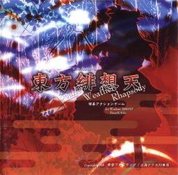

- Welcome to Touhou Wiki!
- Please register to edit. For assistance, check in with our Discord server or IRC channel.
Scarlet Weather Rhapsody
Scarlet Weather Rhapsody | |
|---|---|
|
 | |
| Developer | |
| Publisher | |
| Released |
Trial+: August 17th, 2007 |
| Genre |
Fighting Game |
| Gameplay |
Single-player Story Mode, Human vs. Human Match, Human vs. Computer Match |
| Platforms | |
| Requirements |
|
Touhou
Scarlet Weather Rhapsody debuted at Reitaisai 4, with a playable demo available to patrons. Another demo was released at C72, and an updated version was released online on April 29, 2008. The full version was released at Reitaisai 5 on May 25, 2008.
Gameplay[edit]
Like Immaterial and Missing Power, this game is a fighting game featuring a variety of Touhou Project characters. It appears to be similar in many ways to its predecessor, with many similar sprites and attacks. However, the inclusion of a new weather system that can affect the tides of battle, a 20 card deck system, and the implementation of flight marks a vast difference in gameplay between Immaterial and Missing Power and its successor.
Name and Concept[edit]
| Attention: This section is a stub and it needs expanding with more information related to the section's topic. If you can add to it in any way, please do so. |
Scarlet Weather Rhapsody is the second collaboration between ZUN's Team Shanghai Alice and Twilight Frontier. The events of the game take place after Mountain of Faith.
Story[edit]
A bizarre phenomenon is occurring in Gensokyo. In the middle of summer, untimely rain and hail fall in the Forest of Magic, snow blankets Hakugyokurou, the Scarlet Devil Mansion is enveloped in a cloudy, dense haze, and the Hakurei Shrine is leveled by a sudden earthquake. Throughout the game, Reimu and the other protagonists set out to investigate the source of the strange occurrences.
Tenshi Hinanawi is a celestial. Finding her newfound life in Heaven boring and monotonous, she enviously saw the youkai of Gensokyo stirring many incidents from above. Wielding the power to control the earth and the divine Sword of Hisou, the jaded celestial decides to instigate a catastrophe of her own.
Music[edit]
Scarlet Weather Rhapsody has a total of 31 tracks in the game for many events and all the characters. The soundtrack was mostly arranged by U2 Akiyama, and only Iku Nagae's, Tenshi Hinanawi's and Tenshi's last spell theme were made by ZUN.
The themes in relation to the characters are arrangements from their respective games. Not from their respective games however, both Reimu Hakurei and Marisa Kirisame's themes were arranged from Lotus Land Story, Yukari Yakumo's theme was arranged from Immaterial and Missing Power and Sakuya Izayoi and Aya Shameimaru's themes were arranged from Phantasmagoria of Flower View. Alice Margatroid is the only character to have her theme arranged from her stage theme used over her actual boss theme from Perfect Cherry Blossom.
The pre-battle themes and location themes all share the same motif from "Eastern Heaven of Scarlet Perception" (東方緋想天), the staff roll theme. Tenshi's last spell is arranged from her normal theme, "Catastrophe in Bhavaagra ~ Wonderful Heaven" (有頂天変 ～ Wonderful Heaven).
Press[edit]
| Attention: This section is a stub and it needs expanding with more information related to the section's topic. If you can add to it in any way, please do so. |
Gallery[edit]
Back Cover.
Trial Cover.
External Links[edit]
Official[edit]
- v1.06a update--Requires Japanese locale to install (Note: When you browse for your game folder in the installer, it will add the string "/th105" to your folder address and give the wrong installation location. You should either type in your folder address manually, or delete the "/th105" string from your address after selecting your folder location. This new update patch was released in October 27, 2011, and is not compatible with the old v1.0 english patch.)
- Twilight Frontier's homepage
- Scarlet Weather Rhapsody: Official Site
- ZUN's homepage
Unofficial[edit]
- English Patch Ver 1.1 (Works with the new 1.06a official patch)
- SWR and Hisoutensoku Gameplay Wiki
- Voice Mod (Note: Go to the Voice Mod article for description.)
- ↑ A pun, both in appearance and pronunciation, on "Heaven of neither perception nor non-perception" (in JP: 非想非非想天 hisou hihisou ten), one term for the Buddhist realm of Bhavaagra.